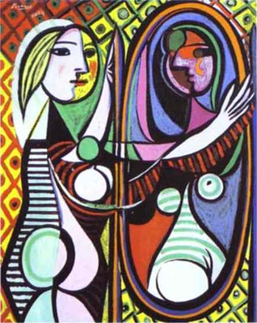

Picasso
Girl Before a Mirror
By setting a conventional day-self over against a tragic night-self, Picasso is able to provide a time capsule of an entire life. He reduces a full-length novel (or movie) like Madame Bovary to a single image of great intensity. By juxtaposition and contrast he is able to "say" a great deal and to provide much intelligibility for daily life. This artistic discovery for achieving rich implication by withholding the syntactical connection is stated as a principle of modern physics by A.N. Whitehead in Science and the Modern World.
Marshall McLuhan, The Mechanical Bride